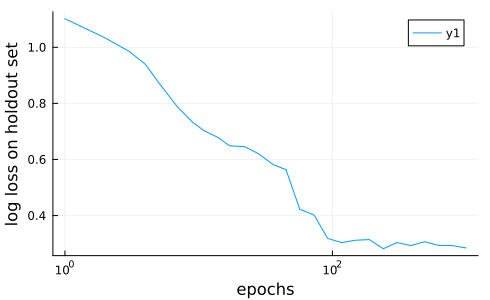

Tutorial 2. Selecting, Training and Evaluating Models
Goals:
- Search MLJ's database of model metadata to identify model candidates for a supervised learning task.
- Evaluate the performance of a model on a holdout set using basic
fit!/predictworkflow.- Inspect the outcomes of training and save these to a file.
- Evaluate performance using other resampling strategies, such as cross-validation, in one line, using
evaluate!- Plot a "learning curve", to inspect performance as a function of some model hyperparameter, such as an iteration parameter
To run the code in this tutorial in a live Julia session, first follow the instructions given here.
The "Hello World!" of machine learning is classification of iris flowers using a famous dataset of Ronald Fisher. This time, we'll grab the data from OpenML:
using MLJ
iris = OpenML.load(61); # a column dictionary table[ Info: Downloading dataset 61.
To describe the dataset, with no need to load it first, run OpenML.describe_dataset(61).
import DataFrames
iris = DataFrames.DataFrame(iris);
first(iris, 4)| Row | sepallength | sepalwidth | petallength | petalwidth | class |
|---|---|---|---|---|---|
| Float64 | Float64 | Float64 | Float64 | Cat… | |
| 1 | 5.1 | 3.5 | 1.4 | 0.2 | Iris-setosa |
| 2 | 4.9 | 3.0 | 1.4 | 0.2 | Iris-setosa |
| 3 | 4.7 | 3.2 | 1.3 | 0.2 | Iris-setosa |
| 4 | 4.6 | 3.1 | 1.5 | 0.2 | Iris-setosa |
Main goal: To build and evaluate models for predicting the :class variable, given the four remaining measurement variables.
Step 1. Inspect and fix scientific types
schema(iris)┌─────────────┬───────────────┬──────────────────────────────────┐
│ names │ scitypes │ types │
├─────────────┼───────────────┼──────────────────────────────────┤
│ sepallength │ Continuous │ Float64 │
│ sepalwidth │ Continuous │ Float64 │
│ petallength │ Continuous │ Float64 │
│ petalwidth │ Continuous │ Float64 │
│ class │ Multiclass{3} │ CategoricalValue{String, UInt32} │
└─────────────┴───────────────┴──────────────────────────────────┘
These look fine.
Step 2. Split data into input and target parts
Here's how we split the data into target and input features, which is needed for MLJ supervised models. We can randomize the data at the same time:
y, X = unpack(iris, ==(:class), rng=123);
scitype(y)AbstractVector{Multiclass{3}} (alias for AbstractArray{ScientificTypesBase.Multiclass{3}, 1})This puts the :class column into a vector y, and all remaining columns into a table X.
To see the documentation for this function, type ?unpack in the Julia REPL (or use @doc unpack elsewhere).
On searching for a model
Here's how to see all models (not immediately useful):
all_models = models()239-element Vector{NamedTuple{(:name, :package_name, :is_supervised, :abstract_type, :constructor, :deep_properties, :docstring, :fit_data_scitype, :human_name, :hyperparameter_ranges, :hyperparameter_types, :hyperparameters, :implemented_methods, :inverse_transform_scitype, :is_pure_julia, :is_wrapper, :iteration_parameter, :load_path, :package_license, :package_url, :package_uuid, :predict_scitype, :prediction_type, :reporting_operations, :reports_feature_importances, :supports_class_weights, :supports_online, :supports_training_losses, :supports_weights, :tags, :target_in_fit, :transform_scitype, :input_scitype, :target_scitype, :output_scitype)}}:
(name = ABODDetector, package_name = OutlierDetectionNeighbors, ... )
(name = ABODDetector, package_name = OutlierDetectionPython, ... )
(name = ARDRegressor, package_name = MLJScikitLearnInterface, ... )
(name = AdaBoostClassifier, package_name = MLJScikitLearnInterface, ... )
(name = AdaBoostRegressor, package_name = MLJScikitLearnInterface, ... )
(name = AdaBoostStumpClassifier, package_name = DecisionTree, ... )
(name = AffinityPropagation, package_name = Clustering, ... )
(name = AffinityPropagation, package_name = MLJScikitLearnInterface, ... )
(name = AgglomerativeClustering, package_name = MLJScikitLearnInterface, ... )
(name = AutoEncoder, package_name = BetaML, ... )
(name = BM25Transformer, package_name = MLJText, ... )
(name = BaggingClassifier, package_name = MLJScikitLearnInterface, ... )
(name = BaggingRegressor, package_name = MLJScikitLearnInterface, ... )
(name = BayesianLDA, package_name = MLJScikitLearnInterface, ... )
(name = BayesianLDA, package_name = MultivariateStats, ... )
(name = BayesianQDA, package_name = MLJScikitLearnInterface, ... )
(name = BayesianRidgeRegressor, package_name = MLJScikitLearnInterface, ... )
(name = BayesianSubspaceLDA, package_name = MultivariateStats, ... )
(name = BernoulliNBClassifier, package_name = MLJScikitLearnInterface, ... )
(name = Birch, package_name = MLJScikitLearnInterface, ... )
(name = BisectingKMeans, package_name = MLJScikitLearnInterface, ... )
(name = BorderlineSMOTE1, package_name = Imbalance, ... )
(name = CBLOFDetector, package_name = OutlierDetectionPython, ... )
(name = CDDetector, package_name = OutlierDetectionPython, ... )
(name = COFDetector, package_name = OutlierDetectionNeighbors, ... )
(name = COFDetector, package_name = OutlierDetectionPython, ... )
(name = COPODDetector, package_name = OutlierDetectionPython, ... )
(name = CardinalityReducer, package_name = MLJTransforms, ... )
(name = CatBoostClassifier, package_name = CatBoost, ... )
(name = CatBoostRegressor, package_name = CatBoost, ... )
(name = ClusterUndersampler, package_name = Imbalance, ... )
(name = ComplementNBClassifier, package_name = MLJScikitLearnInterface, ... )
(name = ConstantClassifier, package_name = MLJModels, ... )
(name = ConstantRegressor, package_name = MLJModels, ... )
(name = ContinuousEncoder, package_name = MLJTransforms, ... )
(name = ContrastEncoder, package_name = MLJTransforms, ... )
(name = CountTransformer, package_name = MLJText, ... )
(name = DBSCAN, package_name = Clustering, ... )
(name = DBSCAN, package_name = MLJScikitLearnInterface, ... )
(name = DNNDetector, package_name = OutlierDetectionNeighbors, ... )
(name = DecisionTreeClassifier, package_name = BetaML, ... )
(name = DecisionTreeClassifier, package_name = DecisionTree, ... )
(name = DecisionTreeRegressor, package_name = BetaML, ... )
(name = DecisionTreeRegressor, package_name = DecisionTree, ... )
(name = DeterministicConstantClassifier, package_name = MLJModels, ... )
(name = DeterministicConstantRegressor, package_name = MLJModels, ... )
(name = DummyClassifier, package_name = MLJScikitLearnInterface, ... )
(name = DummyRegressor, package_name = MLJScikitLearnInterface, ... )
(name = ECODDetector, package_name = OutlierDetectionPython, ... )
(name = ENNUndersampler, package_name = Imbalance, ... )
(name = ElasticNetCVRegressor, package_name = MLJScikitLearnInterface, ... )
(name = ElasticNetRegressor, package_name = MLJLinearModels, ... )
(name = ElasticNetRegressor, package_name = MLJScikitLearnInterface, ... )
(name = EpsilonSVR, package_name = LIBSVM, ... )
(name = EvoLinearRegressor, package_name = EvoLinear, ... )
(name = EvoTreeClassifier, package_name = EvoTrees, ... )
(name = EvoTreeCount, package_name = EvoTrees, ... )
(name = EvoTreeGaussian, package_name = EvoTrees, ... )
(name = EvoTreeMLE, package_name = EvoTrees, ... )
(name = EvoTreeRegressor, package_name = EvoTrees, ... )
(name = ExtraTreesClassifier, package_name = MLJScikitLearnInterface, ... )
(name = ExtraTreesRegressor, package_name = MLJScikitLearnInterface, ... )
(name = FactorAnalysis, package_name = MultivariateStats, ... )
(name = FeatureAgglomeration, package_name = MLJScikitLearnInterface, ... )
(name = FeatureSelector, package_name = FeatureSelection, ... )
(name = FillImputer, package_name = MLJTransforms, ... )
(name = FrequencyEncoder, package_name = MLJTransforms, ... )
(name = GMMDetector, package_name = OutlierDetectionPython, ... )
(name = GaussianMixtureClusterer, package_name = BetaML, ... )
(name = GaussianMixtureImputer, package_name = BetaML, ... )
(name = GaussianMixtureRegressor, package_name = BetaML, ... )
(name = GaussianNBClassifier, package_name = MLJScikitLearnInterface, ... )
(name = GaussianNBClassifier, package_name = NaiveBayes, ... )
(name = GaussianProcessClassifier, package_name = MLJScikitLearnInterface, ... )
(name = GaussianProcessRegressor, package_name = MLJScikitLearnInterface, ... )
(name = GeneralImputer, package_name = BetaML, ... )
(name = GradientBoostingClassifier, package_name = MLJScikitLearnInterface, ... )
(name = GradientBoostingRegressor, package_name = MLJScikitLearnInterface, ... )
(name = HBOSDetector, package_name = OutlierDetectionPython, ... )
(name = HDBSCAN, package_name = MLJScikitLearnInterface, ... )
(name = HierarchicalClustering, package_name = Clustering, ... )
(name = HistGradientBoostingClassifier, package_name = MLJScikitLearnInterface, ... )
(name = HistGradientBoostingRegressor, package_name = MLJScikitLearnInterface, ... )
(name = HuberRegressor, package_name = MLJLinearModels, ... )
(name = HuberRegressor, package_name = MLJScikitLearnInterface, ... )
(name = ICA, package_name = MultivariateStats, ... )
(name = IForestDetector, package_name = OutlierDetectionPython, ... )
(name = INNEDetector, package_name = OutlierDetectionPython, ... )
(name = ImageClassifier, package_name = MLJFlux, ... )
(name = InteractionTransformer, package_name = MLJTransforms, ... )
(name = KDEDetector, package_name = OutlierDetectionPython, ... )
(name = KMeans, package_name = Clustering, ... )
(name = KMeans, package_name = MLJScikitLearnInterface, ... )
(name = KMeans, package_name = ParallelKMeans, ... )
(name = KMeansClusterer, package_name = BetaML, ... )
(name = KMedoids, package_name = Clustering, ... )
(name = KMedoidsClusterer, package_name = BetaML, ... )
(name = KNNClassifier, package_name = NearestNeighborModels, ... )
(name = KNNDetector, package_name = OutlierDetectionNeighbors, ... )
(name = KNNDetector, package_name = OutlierDetectionPython, ... )
(name = KNNRegressor, package_name = NearestNeighborModels, ... )
(name = KNeighborsClassifier, package_name = MLJScikitLearnInterface, ... )
(name = KNeighborsRegressor, package_name = MLJScikitLearnInterface, ... )
(name = KernelPCA, package_name = MultivariateStats, ... )
(name = KernelPerceptronClassifier, package_name = BetaML, ... )
(name = LADRegressor, package_name = MLJLinearModels, ... )
(name = LDA, package_name = MultivariateStats, ... )
(name = LGBMClassifier, package_name = LightGBM, ... )
(name = LGBMRegressor, package_name = LightGBM, ... )
(name = LMDDDetector, package_name = OutlierDetectionPython, ... )
(name = LOCIDetector, package_name = OutlierDetectionPython, ... )
(name = LODADetector, package_name = OutlierDetectionPython, ... )
(name = LOFDetector, package_name = OutlierDetectionNeighbors, ... )
(name = LOFDetector, package_name = OutlierDetectionPython, ... )
(name = LarsCVRegressor, package_name = MLJScikitLearnInterface, ... )
(name = LarsRegressor, package_name = MLJScikitLearnInterface, ... )
(name = LassoCVRegressor, package_name = MLJScikitLearnInterface, ... )
(name = LassoLarsCVRegressor, package_name = MLJScikitLearnInterface, ... )
(name = LassoLarsICRegressor, package_name = MLJScikitLearnInterface, ... )
(name = LassoLarsRegressor, package_name = MLJScikitLearnInterface, ... )
(name = LassoRegressor, package_name = MLJLinearModels, ... )
(name = LassoRegressor, package_name = MLJScikitLearnInterface, ... )
(name = LinearBinaryClassifier, package_name = GLM, ... )
(name = LinearCountRegressor, package_name = GLM, ... )
(name = LinearRegressor, package_name = GLM, ... )
(name = LinearRegressor, package_name = MLJLinearModels, ... )
(name = LinearRegressor, package_name = MLJScikitLearnInterface, ... )
(name = LinearRegressor, package_name = MultivariateStats, ... )
(name = LinearSVC, package_name = LIBSVM, ... )
(name = LogisticCVClassifier, package_name = MLJScikitLearnInterface, ... )
(name = LogisticClassifier, package_name = MLJLinearModels, ... )
(name = LogisticClassifier, package_name = MLJScikitLearnInterface, ... )
(name = MCDDetector, package_name = OutlierDetectionPython, ... )
(name = MaxnetBinaryClassifier, package_name = Maxnet, ... )
(name = MeanShift, package_name = MLJScikitLearnInterface, ... )
(name = MiniBatchKMeans, package_name = MLJScikitLearnInterface, ... )
(name = MissingnessEncoder, package_name = MLJTransforms, ... )
(name = MultiTaskElasticNetCVRegressor, package_name = MLJScikitLearnInterface, ... )
(name = MultiTaskElasticNetRegressor, package_name = MLJScikitLearnInterface, ... )
(name = MultiTaskLassoCVRegressor, package_name = MLJScikitLearnInterface, ... )
(name = MultiTaskLassoRegressor, package_name = MLJScikitLearnInterface, ... )
(name = MultinomialClassifier, package_name = MLJLinearModels, ... )
(name = MultinomialNBClassifier, package_name = MLJScikitLearnInterface, ... )
(name = MultinomialNBClassifier, package_name = NaiveBayes, ... )
(name = MultitargetGaussianMixtureRegressor, package_name = BetaML, ... )
(name = MultitargetKNNClassifier, package_name = NearestNeighborModels, ... )
(name = MultitargetKNNRegressor, package_name = NearestNeighborModels, ... )
(name = MultitargetLinearRegressor, package_name = MultivariateStats, ... )
(name = MultitargetNeuralNetworkRegressor, package_name = BetaML, ... )
(name = MultitargetNeuralNetworkRegressor, package_name = MLJFlux, ... )
(name = MultitargetRidgeRegressor, package_name = MultivariateStats, ... )
(name = MultitargetSRRegressor, package_name = SymbolicRegression, ... )
(name = MultitargetSRTestRegressor, package_name = SymbolicRegression, ... )
(name = NeuralNetworkBinaryClassifier, package_name = MLJFlux, ... )
(name = NeuralNetworkClassifier, package_name = BetaML, ... )
(name = NeuralNetworkClassifier, package_name = MLJFlux, ... )
(name = NeuralNetworkRegressor, package_name = BetaML, ... )
(name = NeuralNetworkRegressor, package_name = MLJFlux, ... )
(name = NuSVC, package_name = LIBSVM, ... )
(name = NuSVR, package_name = LIBSVM, ... )
(name = OCSVMDetector, package_name = OutlierDetectionPython, ... )
(name = OPTICS, package_name = MLJScikitLearnInterface, ... )
(name = OneClassSVM, package_name = LIBSVM, ... )
(name = OneHotEncoder, package_name = MLJTransforms, ... )
(name = OneRuleClassifier, package_name = OneRule, ... )
(name = OrdinalEncoder, package_name = MLJTransforms, ... )
(name = OrthogonalMatchingPursuitCVRegressor, package_name = MLJScikitLearnInterface, ... )
(name = OrthogonalMatchingPursuitRegressor, package_name = MLJScikitLearnInterface, ... )
(name = PCA, package_name = MultivariateStats, ... )
(name = PCADetector, package_name = OutlierDetectionPython, ... )
(name = PPCA, package_name = MultivariateStats, ... )
(name = PartLS, package_name = PartitionedLS, ... )
(name = PassiveAggressiveClassifier, package_name = MLJScikitLearnInterface, ... )
(name = PassiveAggressiveRegressor, package_name = MLJScikitLearnInterface, ... )
(name = PegasosClassifier, package_name = BetaML, ... )
(name = PerceptronClassifier, package_name = BetaML, ... )
(name = PerceptronClassifier, package_name = MLJScikitLearnInterface, ... )
(name = ProbabilisticNuSVC, package_name = LIBSVM, ... )
(name = ProbabilisticSGDClassifier, package_name = MLJScikitLearnInterface, ... )
(name = ProbabilisticSVC, package_name = LIBSVM, ... )
(name = QuantileRegressor, package_name = MLJLinearModels, ... )
(name = RANSACRegressor, package_name = MLJScikitLearnInterface, ... )
(name = RODDetector, package_name = OutlierDetectionPython, ... )
(name = ROSE, package_name = Imbalance, ... )
(name = RandomForestClassifier, package_name = BetaML, ... )
(name = RandomForestClassifier, package_name = DecisionTree, ... )
(name = RandomForestClassifier, package_name = MLJScikitLearnInterface, ... )
(name = RandomForestImputer, package_name = BetaML, ... )
(name = RandomForestRegressor, package_name = BetaML, ... )
(name = RandomForestRegressor, package_name = DecisionTree, ... )
(name = RandomForestRegressor, package_name = MLJScikitLearnInterface, ... )
(name = RandomOversampler, package_name = Imbalance, ... )
(name = RandomUndersampler, package_name = Imbalance, ... )
(name = RandomWalkOversampler, package_name = Imbalance, ... )
(name = RidgeCVClassifier, package_name = MLJScikitLearnInterface, ... )
(name = RidgeCVRegressor, package_name = MLJScikitLearnInterface, ... )
(name = RidgeClassifier, package_name = MLJScikitLearnInterface, ... )
(name = RidgeRegressor, package_name = MLJLinearModels, ... )
(name = RidgeRegressor, package_name = MLJScikitLearnInterface, ... )
(name = RidgeRegressor, package_name = MultivariateStats, ... )
(name = RobustRegressor, package_name = MLJLinearModels, ... )
(name = SGDClassifier, package_name = MLJScikitLearnInterface, ... )
(name = SGDRegressor, package_name = MLJScikitLearnInterface, ... )
(name = SMOTE, package_name = Imbalance, ... )
(name = SMOTEN, package_name = Imbalance, ... )
(name = SMOTENC, package_name = Imbalance, ... )
(name = SODDetector, package_name = OutlierDetectionPython, ... )
(name = SOSDetector, package_name = OutlierDetectionPython, ... )
(name = SRRegressor, package_name = SymbolicRegression, ... )
(name = SRTestRegressor, package_name = SymbolicRegression, ... )
(name = SVC, package_name = LIBSVM, ... )
(name = SVMClassifier, package_name = MLJScikitLearnInterface, ... )
(name = SVMLinearClassifier, package_name = MLJScikitLearnInterface, ... )
(name = SVMLinearRegressor, package_name = MLJScikitLearnInterface, ... )
(name = SVMNuClassifier, package_name = MLJScikitLearnInterface, ... )
(name = SVMNuRegressor, package_name = MLJScikitLearnInterface, ... )
(name = SVMRegressor, package_name = MLJScikitLearnInterface, ... )
(name = SelfOrganizingMap, package_name = SelfOrganizingMaps, ... )
(name = SimpleImputer, package_name = BetaML, ... )
(name = SpectralClustering, package_name = MLJScikitLearnInterface, ... )
(name = StableForestClassifier, package_name = SIRUS, ... )
(name = StableForestRegressor, package_name = SIRUS, ... )
(name = StableRulesClassifier, package_name = SIRUS, ... )
(name = StableRulesRegressor, package_name = SIRUS, ... )
(name = Standardizer, package_name = MLJTransforms, ... )
(name = SubspaceLDA, package_name = MultivariateStats, ... )
(name = TSVDTransformer, package_name = TSVD, ... )
(name = TargetEncoder, package_name = MLJTransforms, ... )
(name = TfidfTransformer, package_name = MLJText, ... )
(name = TheilSenRegressor, package_name = MLJScikitLearnInterface, ... )
(name = TomekUndersampler, package_name = Imbalance, ... )
(name = UnivariateBoxCoxTransformer, package_name = MLJTransforms, ... )
(name = UnivariateDiscretizer, package_name = MLJTransforms, ... )
(name = UnivariateFillImputer, package_name = MLJTransforms, ... )
(name = UnivariateStandardizer, package_name = MLJTransforms, ... )
(name = UnivariateTimeTypeToContinuous, package_name = MLJTransforms, ... )
(name = XGBoostClassifier, package_name = XGBoost, ... )
(name = XGBoostCount, package_name = XGBoost, ... )
(name = XGBoostRegressor, package_name = XGBoost, ... )If you already have an idea about the name of the model, you could search by string or regex:
some_models = models("LinearRegressor")11-element Vector{NamedTuple{(:name, :package_name, :is_supervised, :abstract_type, :constructor, :deep_properties, :docstring, :fit_data_scitype, :human_name, :hyperparameter_ranges, :hyperparameter_types, :hyperparameters, :implemented_methods, :inverse_transform_scitype, :is_pure_julia, :is_wrapper, :iteration_parameter, :load_path, :package_license, :package_url, :package_uuid, :predict_scitype, :prediction_type, :reporting_operations, :reports_feature_importances, :supports_class_weights, :supports_online, :supports_training_losses, :supports_weights, :tags, :target_in_fit, :transform_scitype, :input_scitype, :target_scitype, :output_scitype)}}:
(name = EvoLinearRegressor, package_name = EvoLinear, ... )
(name = LinearBinaryClassifier, package_name = GLM, ... )
(name = LinearCountRegressor, package_name = GLM, ... )
(name = LinearRegressor, package_name = GLM, ... )
(name = LinearRegressor, package_name = MLJLinearModels, ... )
(name = LinearRegressor, package_name = MLJScikitLearnInterface, ... )
(name = LinearRegressor, package_name = MultivariateStats, ... )
(name = MultitargetLinearRegressor, package_name = MultivariateStats, ... )
(name = MultitargetRidgeRegressor, package_name = MultivariateStats, ... )
(name = RidgeRegressor, package_name = MultivariateStats, ... )
(name = SVMLinearRegressor, package_name = MLJScikitLearnInterface, ... )Each entry contains metadata for a model whose defining code is not yet loaded:
meta = some_models[1](name = "EvoLinearRegressor",
package_name = "EvoLinear",
is_supervised = true,
abstract_type = MLJModelInterface.Deterministic,
constructor = nothing,
deep_properties = (),
docstring = "```julia\nEvoLinearRegressor(; kwargs...)\n```\n\nA mo...",
fit_data_scitype =
Union{Tuple{ScientificTypesBase.Table{<:Union{AbstractVector{<:ScientificTypesBase.Continuous}, AbstractVector{<:ScientificTypesBase.Count}, AbstractVector{<:ScientificTypesBase.OrderedFactor}}}, AbstractVector{<:ScientificTypesBase.Continuous}}, Tuple{ScientificTypesBase.Table{<:Union{AbstractVector{<:ScientificTypesBase.Continuous}, AbstractVector{<:ScientificTypesBase.Count}, AbstractVector{<:ScientificTypesBase.OrderedFactor}}}, AbstractVector{<:ScientificTypesBase.Continuous}, AbstractVector{<:Union{ScientificTypesBase.Continuous, ScientificTypesBase.Count}}}},
human_name = "evo linear regressor",
hyperparameter_ranges = (nothing,
nothing,
nothing,
nothing,
nothing,
nothing,
nothing,
nothing,
nothing),
hyperparameter_types = ("Symbol",
"Symbol",
"Symbol",
"Int64",
"Float32",
"Float32",
"Float32",
"Int64",
"Int64"),
hyperparameters = (:loss,
:metric,
:updater,
:nrounds,
:eta,
:L1,
:L2,
:early_stopping_rounds,
:seed),
implemented_methods = [:fit, :predict, :update],
inverse_transform_scitype = ScientificTypesBase.Unknown,
is_pure_julia = true,
is_wrapper = false,
iteration_parameter = :nrounds,
load_path = "EvoLinear.EvoLinearRegressor",
package_license = "MIT",
package_url = "https://github.com/jeremiedb/EvoLinear.jl",
package_uuid = "ab853011-1780-437f-b4b5-5de6f4777246",
predict_scitype = AbstractVector{<:ScientificTypesBase.Continuous},
prediction_type = :deterministic,
reporting_operations = (),
reports_feature_importances = false,
supports_class_weights = false,
supports_online = false,
supports_training_losses = false,
supports_weights = true,
tags = [],
target_in_fit = true,
transform_scitype = ScientificTypesBase.Unknown,
input_scitype =
ScientificTypesBase.Table{<:Union{AbstractVector{<:ScientificTypesBase.Continuous}, AbstractVector{<:ScientificTypesBase.Count}, AbstractVector{<:ScientificTypesBase.OrderedFactor}}},
target_scitype = AbstractVector{<:ScientificTypesBase.Continuous},
output_scitype = ScientificTypesBase.Unknown)targetscitype = meta.target_scitypeAbstractVector{<:Continuous} (alias for AbstractArray{<:ScientificTypesBase.Continuous, 1})scitype(y) <: targetscitypefalseSo this model won't do. Let's find all pure julia classifiers:
filter_julia_classifiers(meta) =
AbstractVector{Finite} <: meta.target_scitype &&
meta.is_pure_julia
models(filter_julia_classifiers)25-element Vector{NamedTuple{(:name, :package_name, :is_supervised, :abstract_type, :constructor, :deep_properties, :docstring, :fit_data_scitype, :human_name, :hyperparameter_ranges, :hyperparameter_types, :hyperparameters, :implemented_methods, :inverse_transform_scitype, :is_pure_julia, :is_wrapper, :iteration_parameter, :load_path, :package_license, :package_url, :package_uuid, :predict_scitype, :prediction_type, :reporting_operations, :reports_feature_importances, :supports_class_weights, :supports_online, :supports_training_losses, :supports_weights, :tags, :target_in_fit, :transform_scitype, :input_scitype, :target_scitype, :output_scitype)}}:
(name = AdaBoostStumpClassifier, package_name = DecisionTree, ... )
(name = BayesianLDA, package_name = MultivariateStats, ... )
(name = BayesianSubspaceLDA, package_name = MultivariateStats, ... )
(name = ConstantClassifier, package_name = MLJModels, ... )
(name = DecisionTreeClassifier, package_name = BetaML, ... )
(name = DecisionTreeClassifier, package_name = DecisionTree, ... )
(name = DeterministicConstantClassifier, package_name = MLJModels, ... )
(name = EvoTreeClassifier, package_name = EvoTrees, ... )
(name = GaussianNBClassifier, package_name = NaiveBayes, ... )
(name = KNNClassifier, package_name = NearestNeighborModels, ... )
(name = KernelPerceptronClassifier, package_name = BetaML, ... )
(name = LDA, package_name = MultivariateStats, ... )
(name = LogisticClassifier, package_name = MLJLinearModels, ... )
(name = MultinomialClassifier, package_name = MLJLinearModels, ... )
(name = MultinomialNBClassifier, package_name = NaiveBayes, ... )
(name = NeuralNetworkClassifier, package_name = BetaML, ... )
(name = NeuralNetworkClassifier, package_name = MLJFlux, ... )
(name = OneRuleClassifier, package_name = OneRule, ... )
(name = PegasosClassifier, package_name = BetaML, ... )
(name = PerceptronClassifier, package_name = BetaML, ... )
(name = RandomForestClassifier, package_name = BetaML, ... )
(name = RandomForestClassifier, package_name = DecisionTree, ... )
(name = StableForestClassifier, package_name = SIRUS, ... )
(name = StableRulesClassifier, package_name = SIRUS, ... )
(name = SubspaceLDA, package_name = MultivariateStats, ... )Find all (supervised) models that match my data!
models(matching(X, y))54-element Vector{NamedTuple{(:name, :package_name, :is_supervised, :abstract_type, :constructor, :deep_properties, :docstring, :fit_data_scitype, :human_name, :hyperparameter_ranges, :hyperparameter_types, :hyperparameters, :implemented_methods, :inverse_transform_scitype, :is_pure_julia, :is_wrapper, :iteration_parameter, :load_path, :package_license, :package_url, :package_uuid, :predict_scitype, :prediction_type, :reporting_operations, :reports_feature_importances, :supports_class_weights, :supports_online, :supports_training_losses, :supports_weights, :tags, :target_in_fit, :transform_scitype, :input_scitype, :target_scitype, :output_scitype)}}:
(name = AdaBoostClassifier, package_name = MLJScikitLearnInterface, ... )
(name = AdaBoostStumpClassifier, package_name = DecisionTree, ... )
(name = BaggingClassifier, package_name = MLJScikitLearnInterface, ... )
(name = BayesianLDA, package_name = MLJScikitLearnInterface, ... )
(name = BayesianLDA, package_name = MultivariateStats, ... )
(name = BayesianQDA, package_name = MLJScikitLearnInterface, ... )
(name = BayesianSubspaceLDA, package_name = MultivariateStats, ... )
(name = CatBoostClassifier, package_name = CatBoost, ... )
(name = ConstantClassifier, package_name = MLJModels, ... )
(name = DecisionTreeClassifier, package_name = BetaML, ... )
(name = DecisionTreeClassifier, package_name = DecisionTree, ... )
(name = DeterministicConstantClassifier, package_name = MLJModels, ... )
(name = DummyClassifier, package_name = MLJScikitLearnInterface, ... )
(name = EvoTreeClassifier, package_name = EvoTrees, ... )
(name = ExtraTreesClassifier, package_name = MLJScikitLearnInterface, ... )
(name = GaussianNBClassifier, package_name = MLJScikitLearnInterface, ... )
(name = GaussianNBClassifier, package_name = NaiveBayes, ... )
(name = GaussianProcessClassifier, package_name = MLJScikitLearnInterface, ... )
(name = GradientBoostingClassifier, package_name = MLJScikitLearnInterface, ... )
(name = HistGradientBoostingClassifier, package_name = MLJScikitLearnInterface, ... )
(name = KNNClassifier, package_name = NearestNeighborModels, ... )
(name = KNeighborsClassifier, package_name = MLJScikitLearnInterface, ... )
(name = KernelPerceptronClassifier, package_name = BetaML, ... )
(name = LDA, package_name = MultivariateStats, ... )
(name = LGBMClassifier, package_name = LightGBM, ... )
(name = LinearSVC, package_name = LIBSVM, ... )
(name = LogisticCVClassifier, package_name = MLJScikitLearnInterface, ... )
(name = LogisticClassifier, package_name = MLJLinearModels, ... )
(name = LogisticClassifier, package_name = MLJScikitLearnInterface, ... )
(name = MultinomialClassifier, package_name = MLJLinearModels, ... )
(name = NeuralNetworkClassifier, package_name = BetaML, ... )
(name = NeuralNetworkClassifier, package_name = MLJFlux, ... )
(name = NuSVC, package_name = LIBSVM, ... )
(name = PassiveAggressiveClassifier, package_name = MLJScikitLearnInterface, ... )
(name = PegasosClassifier, package_name = BetaML, ... )
(name = PerceptronClassifier, package_name = BetaML, ... )
(name = PerceptronClassifier, package_name = MLJScikitLearnInterface, ... )
(name = ProbabilisticNuSVC, package_name = LIBSVM, ... )
(name = ProbabilisticSGDClassifier, package_name = MLJScikitLearnInterface, ... )
(name = ProbabilisticSVC, package_name = LIBSVM, ... )
(name = RandomForestClassifier, package_name = BetaML, ... )
(name = RandomForestClassifier, package_name = DecisionTree, ... )
(name = RandomForestClassifier, package_name = MLJScikitLearnInterface, ... )
(name = RidgeCVClassifier, package_name = MLJScikitLearnInterface, ... )
(name = RidgeClassifier, package_name = MLJScikitLearnInterface, ... )
(name = SGDClassifier, package_name = MLJScikitLearnInterface, ... )
(name = SVC, package_name = LIBSVM, ... )
(name = SVMClassifier, package_name = MLJScikitLearnInterface, ... )
(name = SVMLinearClassifier, package_name = MLJScikitLearnInterface, ... )
(name = SVMNuClassifier, package_name = MLJScikitLearnInterface, ... )
(name = StableForestClassifier, package_name = SIRUS, ... )
(name = StableRulesClassifier, package_name = SIRUS, ... )
(name = SubspaceLDA, package_name = MultivariateStats, ... )
(name = XGBoostClassifier, package_name = XGBoost, ... )Step 3. Select and instantiate a model
To load the code defining a new model type we use the @load macro:
NeuralNetworkClassifier = @load NeuralNetworkClassifier pkg=MLJFluxMLJFlux.NeuralNetworkClassifierOther ways to load model code are described here.
We'll instantiate this type with default values for the hyperparameters:
model = NeuralNetworkClassifier()NeuralNetworkClassifier(
builder = Short(
n_hidden = 0,
dropout = 0.5,
σ = NNlib.σ),
finaliser = NNlib.softmax,
optimiser = Optimisers.Adam(eta=0.001, beta=(0.9, 0.999), epsilon=1.0e-8),
loss = Flux.Losses.crossentropy,
epochs = 10,
batch_size = 1,
lambda = 0.0,
alpha = 0.0,
rng = Random.TaskLocalRNG(),
optimiser_changes_trigger_retraining = false,
acceleration = ComputationalResources.CPU1{Nothing}(nothing),
embedding_dims = Dict{Symbol, Real}())In MLJ a model is just a struct containing hyperparameters, and that's all. A model does not store learned parameters. Models are mutable:
model.epochs = 1212And all models have a key-word constructor that works once @load has been performed:
NeuralNetworkClassifier(epochs=12) == modeltrueOn fitting, predicting, and inspecting models
In MLJ a model and training/validation data are typically bound together in a machine:
mach = machine(model, X, y)untrained Machine; caches model-specific representations of data
model: NeuralNetworkClassifier(builder = Short(n_hidden = 0, …), …)
args:
1: Source @505 ⏎ ScientificTypesBase.Table{AbstractVector{ScientificTypesBase.Continuous}}
2: Source @059 ⏎ AbstractVector{ScientificTypesBase.Multiclass{3}}
A machine stores learned parameters, among other things. We'll train this machine on 70% of the data and evaluate on a 30% holdout set. Let's start by dividing all row indices into train and test subsets:
train, test = partition(1:length(y), 0.7)([1, 2, 3, 4, 5, 6, 7, 8, 9, 10, 11, 12, 13, 14, 15, 16, 17, 18, 19, 20, 21, 22, 23, 24, 25, 26, 27, 28, 29, 30, 31, 32, 33, 34, 35, 36, 37, 38, 39, 40, 41, 42, 43, 44, 45, 46, 47, 48, 49, 50, 51, 52, 53, 54, 55, 56, 57, 58, 59, 60, 61, 62, 63, 64, 65, 66, 67, 68, 69, 70, 71, 72, 73, 74, 75, 76, 77, 78, 79, 80, 81, 82, 83, 84, 85, 86, 87, 88, 89, 90, 91, 92, 93, 94, 95, 96, 97, 98, 99, 100, 101, 102, 103, 104, 105], [106, 107, 108, 109, 110, 111, 112, 113, 114, 115, 116, 117, 118, 119, 120, 121, 122, 123, 124, 125, 126, 127, 128, 129, 130, 131, 132, 133, 134, 135, 136, 137, 138, 139, 140, 141, 142, 143, 144, 145, 146, 147, 148, 149, 150])Now we can fit!...
fit!(mach, rows=train, verbosity=2);[ Info: Training machine(NeuralNetworkClassifier(builder = Short(n_hidden = 0, …), …), …).
[ Info: MLJFlux: converting input data to Float32
[ Info: Loss is 1.106
[ Info: Loss is 1.096
[ Info: Loss is 1.09
[ Info: Loss is 1.08
[ Info: Loss is 1.073
[ Info: Loss is 1.054
[ Info: Loss is 1.061
[ Info: Loss is 1.036
[ Info: Loss is 1.026
[ Info: Loss is 1.003
[ Info: Loss is 0.9871
[ Info: Loss is 0.9638
... and predict:
yhat = predict(mach, rows=test); # or `predict(mach, Xnew)`
yhat[1:3]3-element CategoricalDistributions.UnivariateFiniteVector{ScientificTypesBase.Multiclass{3}, String, UInt32, Float32}:
UnivariateFinite{ScientificTypesBase.Multiclass{3}}(Iris-setosa=>0.376, Iris-versicolor=>0.322, Iris-virginica=>0.302)
UnivariateFinite{ScientificTypesBase.Multiclass{3}}(Iris-setosa=>0.518, Iris-versicolor=>0.315, Iris-virginica=>0.167)
UnivariateFinite{ScientificTypesBase.Multiclass{3}}(Iris-setosa=>0.512, Iris-versicolor=>0.317, Iris-virginica=>0.171)We'll have more to say on the form of this prediction shortly.
After training, one can inspect the learned parameters:
fitted_params(mach)(chain = Chain(Chain(Dense(4 => 3, σ), Dropout(0.5), Dense(3 => 3)), softmax),)Everything else the user might be interested in is accessed from the training report:
report(mach)(training_losses = Float32[1.105516, 1.1064824, 1.0963646, 1.0899975, 1.0800945, 1.0732424, 1.054435, 1.0611892, 1.0356965, 1.0255092, 1.0031275, 0.9870628, 0.96378404],)You save a machine like this:
MLJ.save("neural_net.jls", mach)And retrieve it like this:
mach2 = machine("neural_net.jls")
yhat = predict(mach2, X);
yhat[1:3]3-element CategoricalDistributions.UnivariateFiniteVector{ScientificTypesBase.Multiclass{3}, String, UInt32, Float32}:
UnivariateFinite{ScientificTypesBase.Multiclass{3}}(Iris-setosa=>0.366, Iris-versicolor=>0.322, Iris-virginica=>0.312)
UnivariateFinite{ScientificTypesBase.Multiclass{3}}(Iris-setosa=>0.515, Iris-versicolor=>0.316, Iris-virginica=>0.168)
UnivariateFinite{ScientificTypesBase.Multiclass{3}}(Iris-setosa=>0.374, Iris-versicolor=>0.322, Iris-virginica=>0.305)Machines remember the last set of hyperparameters used during fit, which, in the case of iterative models, allows for a warm restart of computations in the case that only the iteration parameter is increased:
model.epochs = model.epochs + 4
fit!(mach, rows=train, verbosity=2);[ Info: Updating machine(NeuralNetworkClassifier(builder = Short(n_hidden = 0, …), …), …).
[ Info: Loss is 0.9864
[ Info: Loss is 0.9672
[ Info: Loss is 0.9449
[ Info: Loss is 0.9555
For this particular model we can also increase :learning_rate without triggering a cold restart:
model.epochs = model.epochs + 4
model.optimiserOptimisers.Adam(eta=0.001, beta=(0.9, 0.999), epsilon=1.0e-8)import Optimisers
model.optimiser = Optimisers.Adam(0.01)Optimisers.Adam(eta=0.01, beta=(0.9, 0.999), epsilon=1.0e-8)fit!(mach, rows=train, verbosity=2);[ Info: Updating machine(NeuralNetworkClassifier(builder = Short(n_hidden = 0, …), …), …).
[ Info: Loss is 0.9086
[ Info: Loss is 0.9264
[ Info: Loss is 0.9286
[ Info: Loss is 0.8889
However, change any other parameter and training will restart from scratch:
model.lambda = 0.001
fit!(mach, rows=train, verbosity=2);[ Info: Updating machine(NeuralNetworkClassifier(builder = Short(n_hidden = 0, …), …), …).
[ Info: MLJFlux: converting input data to Float32
[ Info: Loss is 1.205
[ Info: Loss is 1.002
[ Info: Loss is 0.8946
[ Info: Loss is 0.8962
[ Info: Loss is 0.8291
[ Info: Loss is 0.7841
[ Info: Loss is 0.7918
[ Info: Loss is 0.7609
[ Info: Loss is 0.7345
[ Info: Loss is 0.6576
[ Info: Loss is 0.8205
[ Info: Loss is 0.6344
[ Info: Loss is 0.5965
[ Info: Loss is 0.6961
[ Info: Loss is 0.6019
[ Info: Loss is 0.6176
[ Info: Loss is 0.6944
[ Info: Loss is 0.6157
[ Info: Loss is 0.5218
[ Info: Loss is 0.5873
Iterative models that implement warm-restart for training can be controlled externally (eg, using an out-of-sample stopping criterion). See here for details.
Let's train silently for a total of 50 epochs, and look at a prediction:
model.epochs = 50
fit!(mach, rows=train)
yhat = predict(mach, X[test,:]); # or predict(mach, rows=test)
yhat[1]UnivariateFinite{ScientificTypesBase.Multiclass{3}}(Iris-setosa=>0.106, Iris-versicolor=>0.607, Iris-virginica=>0.287)What's going on here?
info(model).prediction_type:probabilisticImportant:
In MLJ, a model that can predict probabilities (and not just point values) will do so by default.
For most probabilistic predictors, the predicted object is a
Distributions.Distributionobject or aCategoricalDistributions.UnivariateFiniteobject (the case here) which all support the following methods:rand,pdf,logpdf; and, where appropriate:mode,medianandmean.
So, to obtain the probability of "Iris-virginica" in the first test prediction, we do
pdf(yhat[1], "Iris-virginica")0.2869514f0To get the most likely observation, we do
mode(yhat[1])CategoricalArrays.CategoricalValue{String, UInt32} "Iris-versicolor"These can be broadcast over multiple predictions in the usual way:
broadcast(pdf, yhat[1:4], "Iris-versicolor")4-element Vector{Float32}:
0.60706484
0.0019000835
0.0019024607
0.0021122482mode.(yhat[1:4])4-element CategoricalArrays.CategoricalArray{String,1,UInt32}:
"Iris-versicolor"
"Iris-setosa"
"Iris-setosa"
"Iris-setosa"Or, alternatively, you can use the predict_mode operation instead of predict:
predict_mode(mach, X[test,:])[1:4] # or predict_mode(mach, rows=test)[1:4]4-element CategoricalArrays.CategoricalArray{String,1,UInt32}:
"Iris-versicolor"
"Iris-setosa"
"Iris-setosa"
"Iris-setosa"For a more conventional matrix of probabilities you can do this:
L = levels(y)
pdf(yhat, L)[1:4, :]4×3 Matrix{Float32}:
0.105984 0.607065 0.286951
0.9981 0.00190008 7.28908f-11
0.998098 0.00190246 7.42093f-11
0.997888 0.00211225 8.8793f-11However, in a typical MLJ workflow, this is not as useful as you might imagine. In particular, all probabilistic performance measures in MLJ expect distribution objects in their first slot:
log_loss(yhat, y[test])0.37777010080199586To apply a deterministic measure, we first need to obtain point-estimates:
misclassification_rate(mode.(yhat), y[test])0.044444444444444446For more on metrics provided by MLJ, see the StatisticalMeasures.jl documentation. To list all measures run measures().
Step 4. Evaluate the model performance
Naturally, MLJ provides boilerplate code for carrying out a model evaluation with a lot less fuss. Let's repeat the performance evaluation above and add an extra measure, brier_score:
evaluate!(
mach,
resampling=Holdout(fraction_train=0.7),
measures=[log_loss, misclassification_rate, brier_score],
)PerformanceEvaluation object with these fields:
model, tag, measure, operation,
measurement, uncertainty_radius_95, per_fold, per_observation,
fitted_params_per_fold, report_per_fold,
train_test_rows, resampling, repeats
Tag: NeuralNetworkClassifier-642
Extract:
┌─────────────────────────┬──────────────┬─────────────┐
│ measure │ operation │ measurement │
├─────────────────────────┼──────────────┼─────────────┤
│ LogLoss( │ predict │ 0.378 │
│ tol = 2.22045e-16) │ │ │
│ MisclassificationRate() │ predict_mode │ 0.0444 │
│ BrierScore() │ predict │ -0.206 │
└─────────────────────────┴──────────────┴─────────────┘
Or applying cross-validation instead:
evaluate!(
mach,
resampling=CV(nfolds=6),
measures=[log_loss, misclassification_rate, brier_score],
)PerformanceEvaluation object with these fields:
model, tag, measure, operation,
measurement, uncertainty_radius_95, per_fold, per_observation,
fitted_params_per_fold, report_per_fold,
train_test_rows, resampling, repeats
Tag: NeuralNetworkClassifier-150
Extract:
┌───┬─────────────────────────┬──────────────┬─────────────┐
│ │ measure │ operation │ measurement │
├───┼─────────────────────────┼──────────────┼─────────────┤
│ A │ LogLoss( │ predict │ 0.314 │
│ │ tol = 2.22045e-16) │ │ │
│ B │ MisclassificationRate() │ predict_mode │ 0.0333 │
│ C │ BrierScore() │ predict │ -0.162 │
└───┴─────────────────────────┴──────────────┴─────────────┘
┌───┬────────────────────────────────────────────────────────┬─────────┐
│ │ per_fold │ 1.96*SE │
├───┼────────────────────────────────────────────────────────┼─────────┤
│ A │ [0.323, 0.326, 0.249, 0.316, 0.298, 0.369] │ 0.0347 │
│ B │ [0.04, 0.04, 0.0, 0.04, 0.04, 0.04] │ 0.0143 │
│ C │ Float32[-0.188, -0.156, -0.11, -0.168, -0.147, -0.202] │ 0.0285 │
└───┴────────────────────────────────────────────────────────┴─────────┘
Or, Monte Carlo cross-validation (cross-validation with repeated randomized folds)
e = evaluate!(
mach,
resampling=CV(nfolds=6, rng=123),
repeats=3,
measures=[log_loss, misclassification_rate, brier_score],
)PerformanceEvaluation object with these fields:
model, tag, measure, operation,
measurement, uncertainty_radius_95, per_fold, per_observation,
fitted_params_per_fold, report_per_fold,
train_test_rows, resampling, repeats
Tag: NeuralNetworkClassifier-961
Extract:
┌───┬─────────────────────────┬──────────────┬─────────────┐
│ │ measure │ operation │ measurement │
├───┼─────────────────────────┼──────────────┼─────────────┤
│ A │ LogLoss( │ predict │ 0.317 │
│ │ tol = 2.22045e-16) │ │ │
│ B │ MisclassificationRate() │ predict_mode │ 0.0489 │
│ C │ BrierScore() │ predict │ -0.172 │
└───┴─────────────────────────┴──────────────┴─────────────┘
┌───┬───────────────────────────────────────────────────────────────────────────
│ │ per_fold ⋯
├───┼───────────────────────────────────────────────────────────────────────────
│ A │ [0.311, 0.328, 0.325, 0.343, 0.353, 0.195, 0.315, 0.402, 0.235, 0.347, 0 ⋯
│ B │ [0.0, 0.04, 0.04, 0.04, 0.08, 0.04, 0.12, 0.08, 0.0, 0.04, 0.16, 0.08, 0 ⋯
│ C │ Float32[-0.164, -0.183, -0.172, -0.182, -0.184, -0.0885, -0.181, -0.252, ⋯
└───┴───────────────────────────────────────────────────────────────────────────
2 columns omitted
We finally note that you can restrict the rows of observations from which train and test folds are drawn, by specifying rows=.... For example, imagining the last 30% of target observations are missing you might have a workflow like this:
train, test = partition(eachindex(y), 0.7)
mach = machine(model, X, y)
evaluate!(
mach,
resampling=CV(nfolds=6),
measures=[log_loss, brier_score],
rows=train, # cv estimate, resampling from `train`
)
fit!(mach, rows=train) # re-train using all of `train` observations
predict(mach, rows=test) # and predict missing targets45-element CategoricalDistributions.UnivariateFiniteVector{ScientificTypesBase.Multiclass{3}, String, UInt32, Float32}:
UnivariateFinite{ScientificTypesBase.Multiclass{3}}(Iris-setosa=>0.159, Iris-versicolor=>0.569, Iris-virginica=>0.273)
UnivariateFinite{ScientificTypesBase.Multiclass{3}}(Iris-setosa=>0.997, Iris-versicolor=>0.00299, Iris-virginica=>1.26e-6)
UnivariateFinite{ScientificTypesBase.Multiclass{3}}(Iris-setosa=>0.997, Iris-versicolor=>0.0031, Iris-virginica=>1.31e-6)
UnivariateFinite{ScientificTypesBase.Multiclass{3}}(Iris-setosa=>0.997, Iris-versicolor=>0.00345, Iris-virginica=>1.53e-6)
UnivariateFinite{ScientificTypesBase.Multiclass{3}}(Iris-setosa=>0.187, Iris-versicolor=>0.583, Iris-virginica=>0.23)
UnivariateFinite{ScientificTypesBase.Multiclass{3}}(Iris-setosa=>0.00342, Iris-versicolor=>0.201, Iris-virginica=>0.795)
UnivariateFinite{ScientificTypesBase.Multiclass{3}}(Iris-setosa=>0.997, Iris-versicolor=>0.00271, Iris-virginica=>1.09e-6)
UnivariateFinite{ScientificTypesBase.Multiclass{3}}(Iris-setosa=>0.997, Iris-versicolor=>0.00294, Iris-virginica=>1.22e-6)
UnivariateFinite{ScientificTypesBase.Multiclass{3}}(Iris-setosa=>0.0345, Iris-versicolor=>0.408, Iris-virginica=>0.558)
UnivariateFinite{ScientificTypesBase.Multiclass{3}}(Iris-setosa=>0.225, Iris-versicolor=>0.615, Iris-virginica=>0.16)
UnivariateFinite{ScientificTypesBase.Multiclass{3}}(Iris-setosa=>0.00141, Iris-versicolor=>0.148, Iris-virginica=>0.85)
UnivariateFinite{ScientificTypesBase.Multiclass{3}}(Iris-setosa=>0.00378, Iris-versicolor=>0.208, Iris-virginica=>0.788)
UnivariateFinite{ScientificTypesBase.Multiclass{3}}(Iris-setosa=>0.00167, Iris-versicolor=>0.157, Iris-virginica=>0.842)
UnivariateFinite{ScientificTypesBase.Multiclass{3}}(Iris-setosa=>0.111, Iris-versicolor=>0.532, Iris-virginica=>0.356)
UnivariateFinite{ScientificTypesBase.Multiclass{3}}(Iris-setosa=>0.997, Iris-versicolor=>0.00312, Iris-virginica=>1.33e-6)
UnivariateFinite{ScientificTypesBase.Multiclass{3}}(Iris-setosa=>0.248, Iris-versicolor=>0.622, Iris-virginica=>0.13)
UnivariateFinite{ScientificTypesBase.Multiclass{3}}(Iris-setosa=>0.00268, Iris-versicolor=>0.185, Iris-virginica=>0.813)
UnivariateFinite{ScientificTypesBase.Multiclass{3}}(Iris-setosa=>0.00373, Iris-versicolor=>0.207, Iris-virginica=>0.789)
UnivariateFinite{ScientificTypesBase.Multiclass{3}}(Iris-setosa=>0.0279, Iris-versicolor=>0.39, Iris-virginica=>0.582)
UnivariateFinite{ScientificTypesBase.Multiclass{3}}(Iris-setosa=>0.159, Iris-versicolor=>0.57, Iris-virginica=>0.272)
UnivariateFinite{ScientificTypesBase.Multiclass{3}}(Iris-setosa=>0.32, Iris-versicolor=>0.612, Iris-virginica=>0.0684)
UnivariateFinite{ScientificTypesBase.Multiclass{3}}(Iris-setosa=>0.121, Iris-versicolor=>0.542, Iris-virginica=>0.338)
UnivariateFinite{ScientificTypesBase.Multiclass{3}}(Iris-setosa=>0.158, Iris-versicolor=>0.575, Iris-virginica=>0.267)
UnivariateFinite{ScientificTypesBase.Multiclass{3}}(Iris-setosa=>0.00221, Iris-versicolor=>0.173, Iris-virginica=>0.825)
UnivariateFinite{ScientificTypesBase.Multiclass{3}}(Iris-setosa=>0.996, Iris-versicolor=>0.00421, Iris-virginica=>1.98e-6)
UnivariateFinite{ScientificTypesBase.Multiclass{3}}(Iris-setosa=>0.00177, Iris-versicolor=>0.16, Iris-virginica=>0.838)
UnivariateFinite{ScientificTypesBase.Multiclass{3}}(Iris-setosa=>0.203, Iris-versicolor=>0.601, Iris-virginica=>0.195)
UnivariateFinite{ScientificTypesBase.Multiclass{3}}(Iris-setosa=>0.0213, Iris-versicolor=>0.352, Iris-virginica=>0.627)
UnivariateFinite{ScientificTypesBase.Multiclass{3}}(Iris-setosa=>0.00501, Iris-versicolor=>0.227, Iris-virginica=>0.768)
UnivariateFinite{ScientificTypesBase.Multiclass{3}}(Iris-setosa=>0.00425, Iris-versicolor=>0.216, Iris-virginica=>0.78)
UnivariateFinite{ScientificTypesBase.Multiclass{3}}(Iris-setosa=>0.117, Iris-versicolor=>0.551, Iris-virginica=>0.332)
UnivariateFinite{ScientificTypesBase.Multiclass{3}}(Iris-setosa=>0.996, Iris-versicolor=>0.00408, Iris-virginica=>1.98e-6)
UnivariateFinite{ScientificTypesBase.Multiclass{3}}(Iris-setosa=>0.124, Iris-versicolor=>0.552, Iris-virginica=>0.325)
UnivariateFinite{ScientificTypesBase.Multiclass{3}}(Iris-setosa=>0.176, Iris-versicolor=>0.59, Iris-virginica=>0.234)
UnivariateFinite{ScientificTypesBase.Multiclass{3}}(Iris-setosa=>0.00218, Iris-versicolor=>0.172, Iris-virginica=>0.826)
UnivariateFinite{ScientificTypesBase.Multiclass{3}}(Iris-setosa=>0.026, Iris-versicolor=>0.38, Iris-virginica=>0.594)
UnivariateFinite{ScientificTypesBase.Multiclass{3}}(Iris-setosa=>0.00351, Iris-versicolor=>0.202, Iris-virginica=>0.794)
UnivariateFinite{ScientificTypesBase.Multiclass{3}}(Iris-setosa=>0.221, Iris-versicolor=>0.608, Iris-virginica=>0.171)
UnivariateFinite{ScientificTypesBase.Multiclass{3}}(Iris-setosa=>0.997, Iris-versicolor=>0.00321, Iris-virginica=>1.42e-6)
UnivariateFinite{ScientificTypesBase.Multiclass{3}}(Iris-setosa=>0.997, Iris-versicolor=>0.00322, Iris-virginica=>1.39e-6)
UnivariateFinite{ScientificTypesBase.Multiclass{3}}(Iris-setosa=>0.00416, Iris-versicolor=>0.215, Iris-virginica=>0.781)
UnivariateFinite{ScientificTypesBase.Multiclass{3}}(Iris-setosa=>0.996, Iris-versicolor=>0.00389, Iris-virginica=>1.82e-6)
UnivariateFinite{ScientificTypesBase.Multiclass{3}}(Iris-setosa=>0.0206, Iris-versicolor=>0.355, Iris-virginica=>0.624)
UnivariateFinite{ScientificTypesBase.Multiclass{3}}(Iris-setosa=>0.19, Iris-versicolor=>0.591, Iris-virginica=>0.219)
UnivariateFinite{ScientificTypesBase.Multiclass{3}}(Iris-setosa=>0.019, Iris-versicolor=>0.345, Iris-virginica=>0.636)On learning curves
Since our model is an iterative one, we might want to inspect the out-of-sample performance as a function of the iteration parameter. For this we can use the learning_curve function (which, incidentally can be applied to any model hyperparameter). This starts by defining a one-dimensional range object for the parameter (more on this when we discuss tuning in Tutorial 4):
r = range(model, :epochs, lower=1, upper=1000, scale=:log10)NumericRange(1 ≤ epochs ≤ 1000; origin=500.5, unit=499.5; on log10 scale)curve = learning_curve(
mach,
range=r,
resampling=Holdout(fraction_train=0.7), # (default)
measure=log_loss,
)(parameter_name = "epochs", parameter_scale = :log10, parameter_values = [1, 2, 3, 4, 5, 7, 9, 11, 14, 17, 22, 28, 36, 45, 57, 73, 92, 117, 149, 189, 240, 304, 386, 489, 621, 788, 1000], measurements = [1.0688572877232012, 0.9775668502403386, 0.8957729763444537, 0.8502722820013228, 0.7900654567779567, 0.7161783875903127, 0.6783388511485662, 0.6626694886542754, 0.6302097642164451, 0.6216974806422221, 0.5637847854496398, 0.4898889856077138, 0.42644719180744134, 0.3904612622351922, 0.3374627553349284, 0.31244659954260495, 0.2809301635554485, 0.32667948553139114, 0.23659671315739095, 0.261564989893, 0.28363801902151037, 0.2689894678615147, 0.2256241953963682, 0.2701070883877704, 0.2769876324354052, 0.2150057484379753, 0.2835758104810806])using Plots
gr(size=(490,300))
plt=plot(curve.parameter_values, curve.measurements, xscale=:log10)
xlabel!(plt, "epochs")
ylabel!(plt, "log loss on holdout set")
savefig("learning_curve.png")"/home/runner/work/MLJTutorial.jl/MLJTutorial.jl/docs/src/notebooks/02_models/learning_curve.png"
We will return to learning curves when we look at tuning in Tutorial 4.
Tutorial 2 Resources
- From the MLJ manual:
- Getting Started
- Model Search
- Evaluating Performance (using
evaluate!) - Learning Curves
- Performance Measures (loss functions, scores, etc)
- From Data Science Tutorials:
Tutorial 2 Exercises
Exercise 4
(a) Identify all supervised MLJ models that can be applied (without type coercion or one-hot encoding) to a supervised learning problem with input features X4 and target y4 defined below:
import Distributions
poisson = Distributions.Poisson
age = 18 .+ 60*rand(10);
salary = coerce(rand(["small", "big", "huge"], 10), OrderedFactor);
levels!(salary, ["small", "big", "huge"]);
small = salary[1]CategoricalArrays.CategoricalValue{String, UInt32} "huge" (3/3)X4 = DataFrames.DataFrame(age=age, salary=salary)
n_devices(salary) = salary > small ? rand(poisson(1.3)) : rand(poisson(2.9))
y4 = [n_devices(row.salary) for row in eachrow(X4)]10-element Vector{Int64}:
1
1
5
6
2
3
1
2
5
1(b) What models can be applied if you coerce the salary to a Continuous scitype?
Exercise 5 (unpack)
After evaluating the following ...
data = (
a = [1, 2, 3, 4],
b = rand(4),
c = rand(4),
d = coerce(["male", "female", "female", "male"], OrderedFactor),
);
pretty(data)┌───────┬────────────┬────────────┬──────────────────────────────────┐
│ a │ b │ c │ d │
│ Int64 │ Float64 │ Float64 │ CategoricalValue{String, UInt32} │
│ Count │ Continuous │ Continuous │ OrderedFactor{2} │
├───────┼────────────┼────────────┼──────────────────────────────────┤
│ 1 │ 0.259146 │ 0.0350593 │ male │
│ 2 │ 0.509949 │ 0.0537315 │ female │
│ 3 │ 0.922383 │ 0.801738 │ female │
│ 4 │ 0.828869 │ 0.777606 │ male │
└───────┴────────────┴────────────┴──────────────────────────────────┘
using Tables
y, X, w = unpack(
data,
==(:a),
name -> elscitype(Tables.getcolumn(data, name)) == Continuous,
);...attempt to guess the evaluations of the following:
y;X;w;Exercise 6 (first steps in modeling Horse Colic)
Here is the Horse Colic data introduced in Tutorial 1, together with the type coercions we performed there:
import Downloads
import CSV
url = "https://raw.githubusercontent.com/ablaom/"*
"MachineLearningInJulia2020/"*
"for-MLJ-version-0.16/data/horse.csv"
csv_file = Downloads.download(url)
horse = CSV.read(csv_file, DataFrames.DataFrame)
coerce!(horse, autotype(horse));
coerce!(horse, Count => Continuous);
coerce!(
horse,
:surgery => Multiclass,
:age => Multiclass,
:mucous_membranes => Multiclass,
:capillary_refill_time => Multiclass,
:outcome => Multiclass,
:cp_data => Multiclass,
);
schema(horse)┌─────────────────────────┬──────────────────┬─────────────────────────────────┐
│ names │ scitypes │ types │
├─────────────────────────┼──────────────────┼─────────────────────────────────┤
│ surgery │ Multiclass{2} │ CategoricalValue{Int64, UInt32} │
│ age │ Multiclass{2} │ CategoricalValue{Int64, UInt32} │
│ rectal_temperature │ Continuous │ Float64 │
│ pulse │ Continuous │ Float64 │
│ respiratory_rate │ Continuous │ Float64 │
│ temperature_extremities │ OrderedFactor{4} │ CategoricalValue{Int64, UInt32} │
│ mucous_membranes │ Multiclass{6} │ CategoricalValue{Int64, UInt32} │
│ capillary_refill_time │ Multiclass{3} │ CategoricalValue{Int64, UInt32} │
│ pain │ OrderedFactor{5} │ CategoricalValue{Int64, UInt32} │
│ peristalsis │ OrderedFactor{4} │ CategoricalValue{Int64, UInt32} │
│ abdominal_distension │ OrderedFactor{4} │ CategoricalValue{Int64, UInt32} │
│ packed_cell_volume │ Continuous │ Float64 │
│ total_protein │ Continuous │ Float64 │
│ outcome │ Multiclass{3} │ CategoricalValue{Int64, UInt32} │
│ surgical_lesion │ OrderedFactor{2} │ CategoricalValue{Int64, UInt32} │
│ cp_data │ Multiclass{2} │ CategoricalValue{Int64, UInt32} │
└─────────────────────────┴──────────────────┴─────────────────────────────────┘
(a) Suppose we want to predict the :outcome variable, based on the remaining variables that are Continuous (one-hot encoding categorical variables is discussed later in Tutorial 3) while ignoring the others. Extract from the horse data set (defined in Tutorial 1) appropriate input features X and target variable y. (Do not, however, randomize the observations.)
(b) Create a 70:30 train/test split of the data and train a LogisticClassifier model, from the MLJLinearModels package, on the train rows. Use lambda=100 and default values for the other hyperparameters. (Although one would normally standardize (whiten) the continuous features for this model, do not do so here.) After training:
(i) Recalling that a logistic classifier (aka logistic regressor) is a linear-based model learning a vector of coefficients for each feature (one coefficient for each target class), use the
fitted_paramsmethod to find this vector of coefficients in the case of the:pulsefeature. (You can convert a vector of pairsv = [x1 => y1, x2 => y2, ...]into a dictionary withDict(v).)(ii) Evaluate the
log_lossperformance on thetestobservations.(iii) In how many
testobservations does the predicted probability of the observed class exceed 50%?(iv) Find the
misclassification_ratein thetestset. (Hint. As this measure is deterministic, you will either need to broadcastmodeor usepredict_modeinstead ofpredict.)
(c) Instead use a RandomForestClassifier model from the DecisionTree package and:
(i) Generate an appropriate learning curve to convince yourself that out-of-sample estimates of the
log_lossloss do not substantially improve forn_trees > 50. Use default values for all other hyperparameters, and use all available data to generate the curve.(ii) Fix
n_trees=90and useevaluate!to obtain a 9-fold cross-validation estimate of thelog_loss, restricting sub-sampling to thetrainobservations.(iii) Now use all available data but set
resampling=Holdout(fraction_train=0.7)to obtain a score you can compare with theKNNClassifierin part (b)(iii). Which model seems better?
This page was generated using Literate.jl.